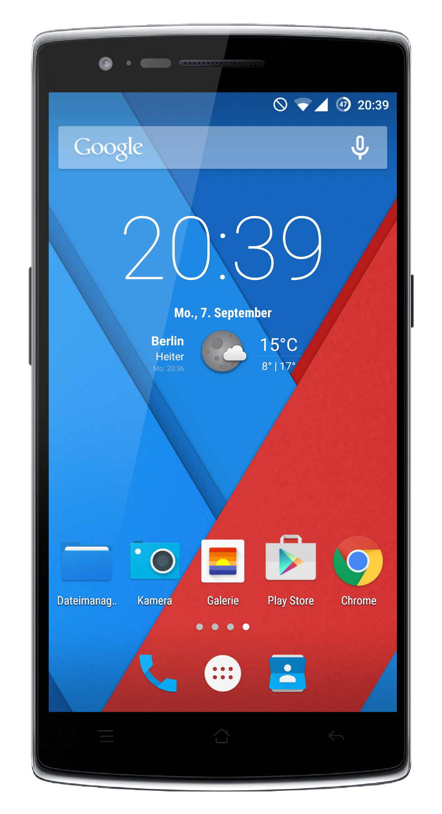
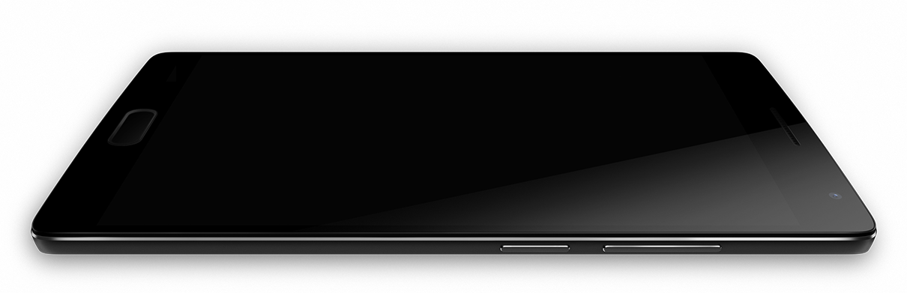
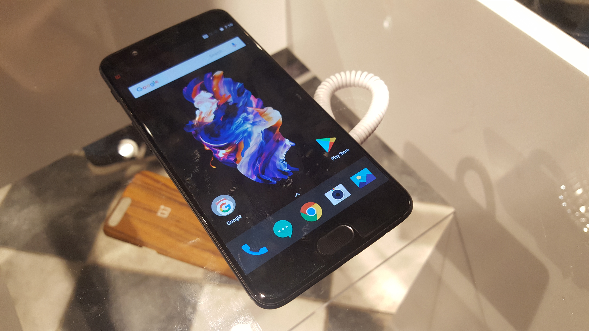
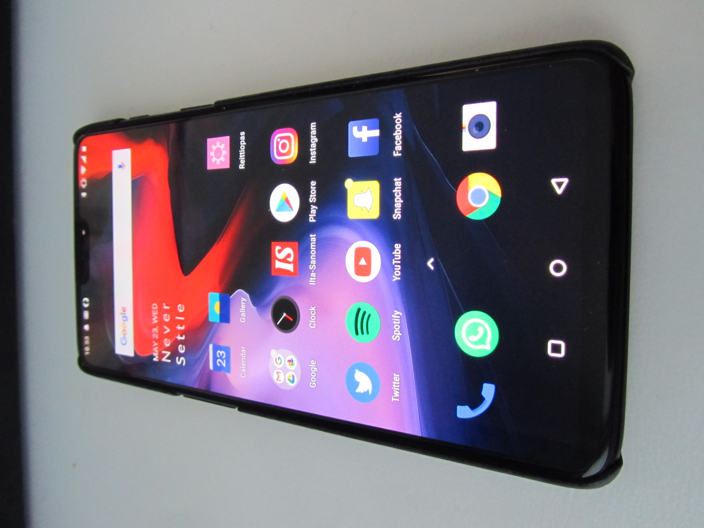
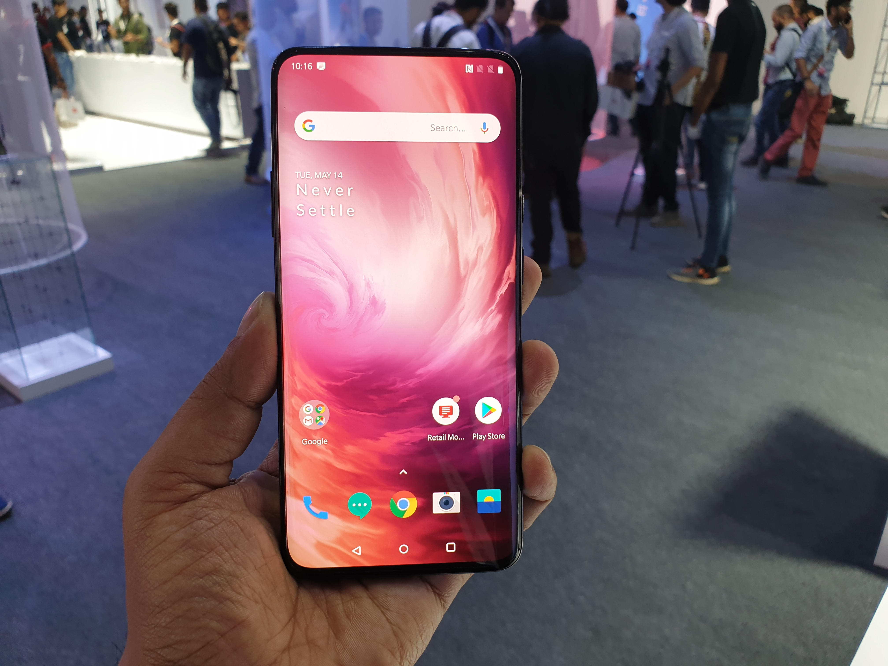
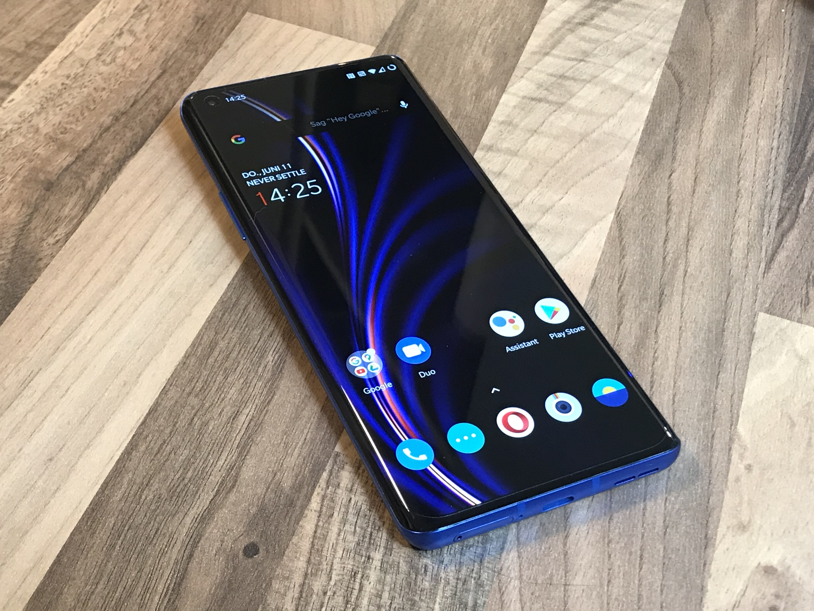

OnePlus One
OnePlus One — смартфон китайской компании OnePlus, которая позиционирует его как «Убийца флагманов». Был представлен 23 апреля 2014 года. Смартфон впервые стал доступен для покупки 25 апреля 2014 года исключительно по специальным инвайтам (приглашениям) на сайте OnePlus. Приглашения можно было получить, участвуя в различных конкурсах. Начиная с 20 апреля 2015 устройства продаются без инвайтов. Стоит отметить, что китайская версия изначально была в свободной продаже на территории Китая.
OnePlus 2
OnePlus 2 — смартфон компании OnePlus, представленный 29 июля 2015 года. Является преемником модели OnePlus One. OnePlus позиционирует его на рынке как «Убийца флагманов 2016».
OnePlus 3

OnePlus 3 (также сокращенно OP3) - смартфон, выпущенный компанией OnePlus. Он был представлен 14 июня 2016 года. Телефон был представлен на мероприятии виртуальной реальности, и OnePlus предложила своим клиентам VR-гарнитуры Loop, чтобы они могли испытать это событие с помощью своих телефонов, раздав 30 000 бесплатных гарнитур вместо традиционной пресс-конференции.
OnePlus 5
OnePlus 5 — смартфон, разработанный компанией OnePlus и представленный летом 2017 года.
OnePlus 6
OnePlus 6 — смартфон компании OnePlus, анонсированный 16 мая 2018 года в Лондоне. По словам компании, OnePlus 6 в первый же день продаж побил рекорд, став самым быстро распродаваемым смартфоном среди всех устройств OnePlus. Поддерживает установку LineageOS 19.
OnePlus 7
OnePlus 7 и OnePlus 7 Pro (стилизованные под OnePlus 7Pro) - Android-смартфоны производства OnePlus. Они были представлены 14 мая 2019 года.
OnePlus 8
OnePlus 8 и OnePlus 8 Pro - смартфоны на базе Android от компании OnePlus, представленные 14 апреля 2020 года. Они стали доступны для покупки в США 29 апреля 2020 года.
OnePlus 9
OnePlus 9 5G и 9 Pro 5G - смартфоны на базе Android от компании OnePlus, представленные 23 марта 2021 года. Телефоны оснащены обновленными камерами, разработанными в партнерстве с Hasselblad.